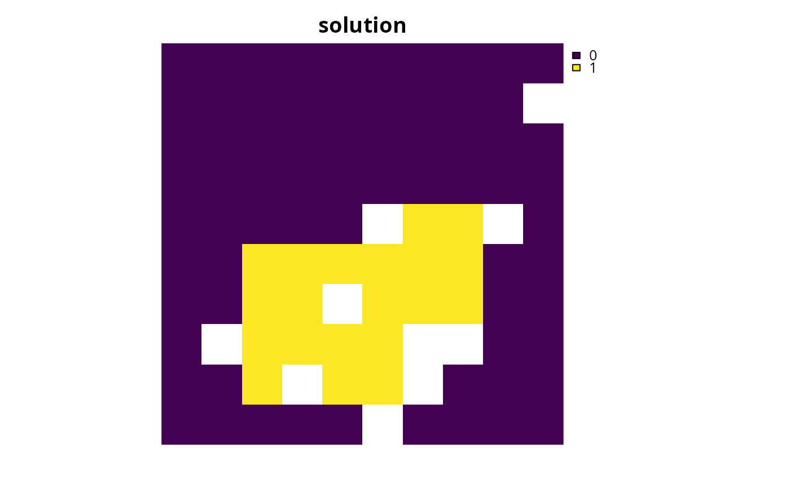

Calibrate penalties with Cohon's method
Source:R/calibrate_cohon_penalty.R
calibrate_cohon_penalty.RdIdentify a penalty value that represents a suitable compromise between the primary objective and a penalty for a conservation planning problem. This is accomplished following the multi-objective algorithm developed by Cohon et al. (1979) that was later adapted for systematic conservation planning (Ardron et al. 2010; Fischer and Church 2005).
Arguments
- x
problem()object with a penalty.- approx
logicalvalue indicating if an approximation method should be used for the calculations. Defaults toTRUEto reduce computational burden. See Details section for more information.- verbose
logicalshould information be printed while solving optimization problems? Defaults toTRUE.
Value
A numeric value corresponding to the calibrated penalty value.
Additionally, this value has attributes that contain the values used to
calculate the calibrated penalty value. These attributes include the
(solution_1_objective) optimal objective value, (solution_1_penalty)
best possible penalty value given that the solution must be optimal
according to the primary objective, (solution_2_penalty) optimal
penalty value, and (solution_2_objective) best possible objective value
given that a solution must be optimal according to the penalties.
Details
This function provides a routine for implementing Cohon's method
(1979) to identify a suitable penalty value.
It can be used calibrate a broad range of penalties,
including boundary penalties (add_boundary_penalties()),
connectivity penalties (add_connectivity_penalties()),
asymmetric connectivity penalties (add_asym_connectivity_penalties()),
and linear penalties (add_linear_penalties()).
Note that the penalty value identified by this function is calculated
in a manner that reflects the overall problem formulation (per x).
Thus if you are considering multiple scenarios that consider different
objectives, constraints, penalties, targets, decision types, or underlying
datasets, then you will likely need to re-run the calibration process
to identify a suitable penalty value for each scenario (separately).
The suitability of the resulting penalty value depends on the optimality
gap used during optimization, as well as whether the approximation method
is used or not. In particular, a gap of zero will result in the best
estimate, and a gap greater than zero may result in worse estimates.
It is recommended to keep the optimality gap low (e.g., between 0 and 0.1),
and a relatively small gap may be needed in some cases
(e.g., 0, 0.01 or 0.05).
Additionally, the approximation method (i.e., with approx = TRUE)
may result in penalty values that do not represent a suitable compromise
between the objective and the penalty. Although this will happen if
there are multiple optimal solutions to the primary objective or the
penalty; in practice, this is unlikely to be an issue when considering a
moderate number of features and planning units. If this is an issue,
then a more robust approach can be employed
(i.e., by setting approx = FALSE) that uses additional
optimization routines to potentially obtain a better
estimate of a suitable penalty value.
As such, it is recommended to try running the function with default
settings and see if the resulting penalty value is suitable. If not,
then try running it with a smaller optimality gap or
the robust approach.
Mathematical formulation
A suitable penalty value is identified using the following procedure.
The optimal value for the primary objective is calculated (referred to as
solution_1_objectivein the output). This is accomplished by solving the problem without the penalty. For example, if considering a minimum set problem with boundary penalties, then this value would correspond to the cost of the solution that has the smallest cost (whilst meeting all the targets).The best possible penalty value given that the solution must be optimal according to the primary objective is calculated (referred to as
solution_1_penaltyin the output). For example, if considering a minimum set problem with boundary penalties, then this value would correspond to the smallest possible total boundary length that is possible when a solution must have minimum cost (whilst meeting all the targets). If using the approximation method (perapprox = TRUE), this value is estimated based on the penalty value of the solution produced in the previous step. Otherwise, if using the robust method (perapprox = FALSE), this value is calculated by performing an additional optimization routine to ensure that this value is correct when there are multiple optimal solutions.The optimal value for the penalty is calculated (referred to as
solution_2_penaltyin the output). This is accomplished by modifying the problem so that it only focuses on minimizing the penalty as much as possible (i.e., ignoring the primary objective) and solving it. For example, if considering a minimum set problem with boundary penalties, then this value would correspond to the total boundary length of the solution that has the smallest total boundary length (while still meeting all the targets).The best possible objective value given that the solution must be optimal according to the penalties is calculated (referred to as
solution_2_objectivein the output). For example, if considering a minimum set problem with boundary penalties, then this value would correspond to the smallest possible cost that is possible when a solution must have the minimum boundary length (whilst meeting all the targets). If using the approximation method (perapprox = TRUE), this value is estimated based on the objective value of the solution produced in the previous step. Otherwise, if using the robust method (perapprox = FALSE), this value is calculated by performing an additional optimization routine to ensure that this value is correct when there are multiple optimal solutions.After completing the previous calculations, the suitable penalty value is calculated using the following equation. Here, the values calculated in steps 1, 2, 3, and 4 correspond to \(a\), \(b\), \(c\), and \(d\) (respectively). $$ \left| \frac{(a - c)}{(b - d)} \right|$$
References
Ardron JA, Possingham HP, and Klein CJ (eds) (2010) Marxan Good Practices Handbook, Version 2. Pacific Marine Analysis and Research Association, Victoria, BC, Canada.
Cohon JL, Church RL, and Sheer DP (1979) Generating multiobjective trade-offs: An algorithm for bicriterion problems. Water Resources Research, 15: 1001–1010.
Fischer DT and Church RL (2005) The SITES reserve selection system: A critical review. Environmental Modeling and Assessment, 10: 215–228.
See also
See penalties for an overview of all functions for adding penalties.
Examples
# \dontrun{
# set seed for reproducibility
set.seed(500)
# load data
sim_pu_raster <- get_sim_pu_raster()
sim_features <- get_sim_features()
# create problem with boundary penalties
## note that we use penalty = 1 as a place-holder
p1 <-
problem(sim_pu_raster, sim_features) %>%
add_min_set_objective() %>%
add_boundary_penalties(penalty = 1) %>%
add_relative_targets(0.2) %>%
add_binary_decisions() %>%
add_default_solver(verbose = FALSE)
# find calibrated boundary penalty using Cohon's method
cohon_penalty <- calibrate_cohon_penalty(p1, verbose = FALSE)
# create a new problem with the calibrated boundary penalty
p2 <-
problem(sim_pu_raster, sim_features) %>%
add_min_set_objective() %>%
add_boundary_penalties(penalty = cohon_penalty) %>%
add_relative_targets(0.2) %>%
add_binary_decisions() %>%
add_default_solver(verbose = FALSE)
# solve problem
s2 <- solve(p2)
# plot solution
plot(s2, main = "solution", axes = FALSE)

# }